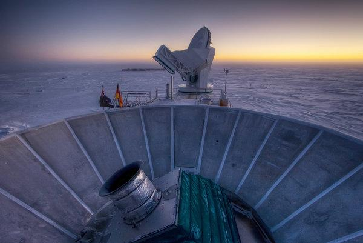

Space Ripples Reveal Big
Bang’s Smoking Gun
Alan Guth was one of the first physicists to hypothesize the existence of inflation, which explains how the universe expanded so uniformly and so quickly in the instant after the Big Bang 13.8 billion years ago.Rick Friedman for The New York Times
By Dennis Overbay
March 17, 2014
‘As Big as It Gets’
Stanford Professor Andrei Linde celebrates physics Video by StanfordUniversity
Spirals in the Sky

The Bicep2 telescope, in the foreground, was used to detect the faint spiraling gravity patterns — the signature of a universe being wrenched violently apart at its birth. Richter/Associated Press